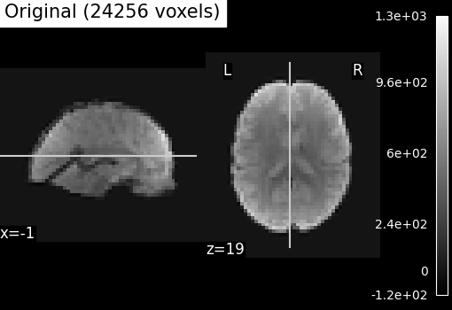
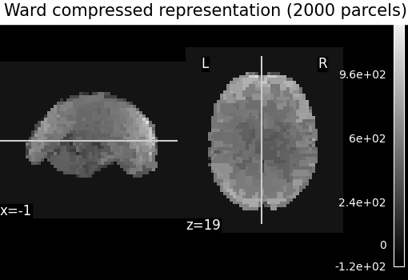

Note
Go to the end to download the full example code. or to run this example in your browser via Binder
Clustering methods to learn a brain parcellation from fMRI¶
We use spatially-constrained Ward-clustering, KMeans, Hierarchical KMeans and Recursive Neighbor Agglomeration (ReNA) to create a set of parcels.
In a high dimensional regime, these methods can be interesting to create a ‘compressed’ representation of the data, replacing the data in the fMRI images by mean signals on the parcellation, which can subsequently be used for statistical analysis or machine learning.
Also, these methods can be used to learn functional connectomes and subsequently for classification tasks or to analyze data at a local level.
See also
Which clustering method to use, an empirical comparison can be found in Thirion et al.[1].
This parcellation may be useful in a supervised learning, see for instance Michel et al.[2].
The big picture discussion corresponding to this example can be found in the documentation section Clustering to parcellate the brain in regions.
from nilearn._utils.helpers import check_matplotlib
check_matplotlib()
Download a brain development fMRI dataset and turn it to a data matrix¶
We download one subject of the movie watching dataset from Internet
import time
import numpy as np
from matplotlib import patches, ticker
from nilearn import datasets, plotting
from nilearn.image import get_data, index_img, mean_img
from nilearn.regions import Parcellations
dataset = datasets.fetch_development_fmri(n_subjects=1)
# print basic information on the dataset
print(f"First subject functional nifti image (4D) is at: {dataset.func[0]}")
[fetch_development_fmri] Dataset found in
/home/runner/nilearn_data/development_fmri
[fetch_development_fmri] Dataset found in
/home/runner/nilearn_data/development_fmri/development_fmri
[fetch_development_fmri] Dataset found in
/home/runner/nilearn_data/development_fmri/development_fmri
First subject functional nifti image (4D) is at: /home/runner/nilearn_data/development_fmri/development_fmri/sub-pixar123_task-pixar_space-MNI152NLin2009cAsym_desc-preproc_bold.nii.gz
Brain parcellations with Ward Clustering¶
Transforming list of images to data matrix and build brain parcellations, all can be done at once using Parcellations object.
# Computing ward for the first time, will be long... This can be seen by
# measuring using time
start = time.time()
# Agglomerative Clustering: ward
# We build parameters of our own for this object. Parameters related to
# masking, caching and defining number of clusters and specific parcellations
# method.
ward = Parcellations(
method="ward",
n_parcels=1000,
standardize=False,
smoothing_fwhm=2.0,
memory="nilearn_cache",
memory_level=1,
verbose=1,
)
# Call fit on functional dataset: single subject (less samples).
ward.fit(dataset.func)
print(f"Ward agglomeration 1000 clusters: {time.time() - start:.2f}s")
# We compute now ward clustering with 2000 clusters and compare
# time with 1000 clusters. To see the benefits of caching for second time.
# We initialize class again with n_parcels=2000 this time.
start = time.time()
ward = Parcellations(
method="ward",
n_parcels=2000,
standardize=False,
smoothing_fwhm=2.0,
memory="nilearn_cache",
memory_level=1,
verbose=1,
)
ward.fit(dataset.func)
print(f"Ward agglomeration 2000 clusters: {time.time() - start:.2f}s")
[Parcellations.fit] Loading data from
['/home/runner/nilearn_data/development_fmri/development_fmri/sub-pixar123_task-
pixar_space-MNI152NLin2009cAsym_desc-preproc_bold.nii.gz']
[Parcellations.fit] Computing mask
[Parcellations.fit] Resamping mask
[Parcellations.fit] Finished fit
[Parcellations.fit] Loading data
[Parcellations.fit] Loading data from <nibabel.nifti1.Nifti1Image object at
0x7f99ffe58430>
[Parcellations.fit] Smoothing images
[Parcellations.fit] Extracting region signals
[Parcellations.fit] Cleaning extracted signals
[Parcellations.fit] Computing image from signals
[Parcellations.fit] computing ward
________________________________________________________________________________
[Memory] Calling nilearn.regions.parcellations._estimator_fit...
_estimator_fit(array([[-0.010751, ..., 0.004306],
...,
[ 0.004826, ..., 0.003096]]),
AgglomerativeClustering(connectivity=<24256x24256 sparse matrix of type '<class 'numpy.int64'>'
with 162682 stored elements in COOrdinate format>,
memory=Memory(location=nilearn_cache/joblib),
n_clusters=1000))
________________________________________________________________________________
[Memory] Calling sklearn.cluster._agglomerative.ward_tree...
ward_tree(array([[-0.010751, ..., 0.004826],
...,
[ 0.004306, ..., 0.003096]]), connectivity=<24256x24256 sparse matrix of type '<class 'numpy.int64'>'
with 162682 stored elements in COOrdinate format>, n_clusters=1000, return_distance=False)
________________________________________________________ward_tree - 2.3s, 0.0min
____________________________________________________estimator_fit - 2.5s, 0.0min
[Parcellations.fit] Computing image from signals
Ward agglomeration 1000 clusters: 7.28s
[Parcellations.fit] Loading data from
['/home/runner/nilearn_data/development_fmri/development_fmri/sub-pixar123_task-
pixar_space-MNI152NLin2009cAsym_desc-preproc_bold.nii.gz']
[Parcellations.fit] Computing mask
[Parcellations.fit] Resamping mask
[Parcellations.fit] Finished fit
[Parcellations.fit] Loading data
[Parcellations.fit] Computing image from signals
[Parcellations.fit] computing ward
________________________________________________________________________________
[Memory] Calling nilearn.regions.parcellations._estimator_fit...
_estimator_fit(array([[-0.010751, ..., 0.004306],
...,
[ 0.004826, ..., 0.003096]]),
AgglomerativeClustering(connectivity=<24256x24256 sparse matrix of type '<class 'numpy.int64'>'
with 162682 stored elements in COOrdinate format>,
memory=Memory(location=nilearn_cache/joblib),
n_clusters=2000))
________________________________________________________________________________
[Memory] Calling sklearn.cluster._agglomerative.ward_tree...
ward_tree(array([[-0.010751, ..., 0.004826],
...,
[ 0.004306, ..., 0.003096]]), connectivity=<24256x24256 sparse matrix of type '<class 'numpy.int64'>'
with 162682 stored elements in COOrdinate format>, n_clusters=2000, return_distance=False)
________________________________________________________ward_tree - 1.9s, 0.0min
____________________________________________________estimator_fit - 2.1s, 0.0min
[Parcellations.fit] Computing image from signals
Ward agglomeration 2000 clusters: 4.93s
Visualize: Brain parcellations (Ward)¶
First, we display the parcellations of the brain image stored in attribute labels_img_
ward_labels_img = ward.labels_img_
# Now, ward_labels_img are Nifti1Image object, it can be saved to file
# with the following code:
from pathlib import Path
output_dir = Path.cwd() / "results" / "plot_data_driven_parcellations"
output_dir.mkdir(exist_ok=True, parents=True)
print(f"Output will be saved to: {output_dir}")
ward_labels_img.to_filename(output_dir / "ward_parcellation.nii.gz")
first_plot = plotting.plot_roi(
ward_labels_img, title="Ward parcellation", display_mode="xz"
)
plotting.show()
# Grab cut coordinates from this plot to use as a common for all plots
cut_coords = first_plot.cut_coords

Output will be saved to: /home/runner/work/nilearn/nilearn/examples/03_connectivity/results/plot_data_driven_parcellations
Compressed representation of Ward clustering¶
Second, we illustrate the effect that the clustering has on the signal. We show the original data, and the approximation provided by the clustering by averaging the signal on each parcel.
# Grab number of voxels from attribute mask image (mask_img_).
original_voxels = np.sum(get_data(ward.mask_img_))
# Compute mean over time on the functional image to use the mean
# image for compressed representation comparisons
mean_func_img = mean_img(dataset.func[0], copy_header=True)
# Compute common vmin and vmax
vmin = np.min(get_data(mean_func_img))
vmax = np.max(get_data(mean_func_img))
plotting.plot_epi(
mean_func_img,
cut_coords=cut_coords,
title=f"Original ({int(original_voxels)} voxels)",
vmax=vmax,
vmin=vmin,
display_mode="xz",
)
# A reduced dataset can be created by taking the parcel-level average:
# Note that Parcellation objects with any method have the opportunity to
# use a `transform` call that modifies input features. Here it reduces their
# dimension. Note that we `fit` before calling a `transform` so that average
# signals can be created on the brain parcellations with fit call.
fmri_reduced = ward.transform(dataset.func)
# Display the corresponding data compressed
# using the parcellation using parcels=2000.
fmri_compressed = ward.inverse_transform(fmri_reduced)
plotting.plot_epi(
index_img(fmri_compressed, 0),
cut_coords=cut_coords,
title="Ward compressed representation (2000 parcels)",
vmin=vmin,
vmax=vmax,
display_mode="xz",
)
plotting.show()
# As you can see below, this approximation is almost good, although there
# are only 2000 parcels, instead of the original 60000 voxels
- 
- 
[Parcellations.wrapped] Loading regions from <nibabel.nifti1.Nifti1Image object
at 0x7f99ffefe970>
[Parcellations.wrapped] Loading mask from <nibabel.nifti1.Nifti1Image object at
0x7f99ffefe9d0>
[Parcellations.wrapped] Finished fit
________________________________________________________________________________
[Memory] Calling nilearn.maskers.base_masker.filter_and_extract...
filter_and_extract(<nibabel.nifti1.Nifti1Image object at 0x7f9a00fd76d0>, <nilearn.maskers.nifti_labels_masker._ExtractionFunctor object at 0x7f9a00fe08b0>,
{ 'background_label': 0,
'clean_args': None,
'clean_kwargs': {},
'cmap': 'CMRmap_r',
'detrend': False,
'dtype': None,
'high_pass': None,
'high_variance_confounds': False,
'keep_masked_labels': True,
'labels': None,
'labels_img': <nibabel.nifti1.Nifti1Image object at 0x7f99ffefe970>,
'low_pass': None,
'lut': None,
'mask_img': <nibabel.nifti1.Nifti1Image object at 0x7f99ffefe9d0>,
'reports': True,
'smoothing_fwhm': 2.0,
'standardize': False,
'standardize_confounds': True,
'strategy': 'mean',
't_r': None,
'target_affine': None,
'target_shape': None}, confounds=None, sample_mask=None, dtype=None, memory=Memory(location=nilearn_cache/joblib), memory_level=1, verbose=1)
[Parcellations.wrapped] Loading data from <nibabel.nifti1.Nifti1Image object at
0x7f9a00fd76d0>
[Parcellations.wrapped] Smoothing images
[Parcellations.wrapped] Extracting region signals
[Parcellations.wrapped] Cleaning extracted signals
_______________________________________________filter_and_extract - 1.4s, 0.0min
Brain parcellations with KMeans Clustering¶
We use the same approach as with building parcellations using Ward clustering. But, in the range of a small number of clusters, it is most likely that we want to use standardization. Indeed with standardization and smoothing, the clusters will form as regions.
# class/functions can be used here as they are already imported above.
# This object uses method='kmeans' for KMeans clustering with 10mm smoothing
# and standardization ON
start = time.time()
kmeans = Parcellations(
method="kmeans",
n_parcels=50,
standardize="zscore_sample",
smoothing_fwhm=10.0,
memory="nilearn_cache",
memory_level=1,
verbose=1,
)
# Call fit on functional dataset: single subject (less samples)
kmeans.fit(dataset.func)
print(f"KMeans clusters: {time.time() - start:.2f}s")
[Parcellations.fit] Loading data from
['/home/runner/nilearn_data/development_fmri/development_fmri/sub-pixar123_task-
pixar_space-MNI152NLin2009cAsym_desc-preproc_bold.nii.gz']
[Parcellations.fit] Computing mask
[Parcellations.fit] Resamping mask
[Parcellations.fit] Finished fit
[Parcellations.fit] Loading data
[Parcellations.fit] Loading data from <nibabel.nifti1.Nifti1Image object at
0x7f9a0ef78ca0>
[Parcellations.fit] Smoothing images
[Parcellations.fit] Extracting region signals
[Parcellations.fit] Cleaning extracted signals
[Parcellations.fit] Computing image from signals
[Parcellations.fit] computing kmeans
________________________________________________________________________________
[Memory] Calling nilearn.regions.parcellations._estimator_fit...
_estimator_fit(array([[ 0.001838, ..., 0.009333],
...,
[-0.000797, ..., 0.005922]]),
MiniBatchKMeans(n_clusters=50, n_init=3, random_state=0))
____________________________________________________estimator_fit - 0.5s, 0.0min
[Parcellations.fit] Computing image from signals
KMeans clusters: 4.95s
Visualize: Brain parcellations (KMeans)¶
Grab parcellations of brain image stored in attribute labels_img_
kmeans_labels_img = kmeans.labels_img_
display = plotting.plot_roi(
kmeans_labels_img,
mean_func_img,
title="KMeans parcellation",
display_mode="xz",
)
plotting.show()
# kmeans_labels_img is a Nifti1Image object, it can be saved to file with
# the following code:
kmeans_labels_img.to_filename(output_dir / "kmeans_parcellation.nii.gz")

Brain parcellations with Hierarchical KMeans Clustering¶
As the number of images from which we try to cluster grows, voxels display more and more specific activity patterns causing KMeans clusters to be very unbalanced with a few big clusters and many voxels left as singletons. Hierarchical Kmeans algorithm is tailored to enforce more balanced clusterings. To do this, Hierarchical Kmeans does a first Kmeans clustering in square root of n_parcels. In a second step, it clusters voxels inside each of these parcels in m pieces with m adapted to the size of the cluster in order to have n balanced clusters in the end.
This object uses method=’hierarchical_kmeans’ for Hierarchical KMeans clustering and 10mm smoothing and standardization to compare with the previous method.
start = time.time()
hkmeans = Parcellations(
method="hierarchical_kmeans",
n_parcels=50,
standardize="zscore_sample",
smoothing_fwhm=10,
memory="nilearn_cache",
memory_level=1,
verbose=1,
)
# Call fit on functional dataset: single subject (less samples)
hkmeans.fit(dataset.func)
[Parcellations.fit] Loading data from
['/home/runner/nilearn_data/development_fmri/development_fmri/sub-pixar123_task-
pixar_space-MNI152NLin2009cAsym_desc-preproc_bold.nii.gz']
[Parcellations.fit] Computing mask
[Parcellations.fit] Resamping mask
[Parcellations.fit] Finished fit
[Parcellations.fit] Loading data
[Parcellations.fit] Loading data from <nibabel.nifti1.Nifti1Image object at
0x7f9a0004ca30>
[Parcellations.fit] Smoothing images
[Parcellations.fit] Extracting region signals
[Parcellations.fit] Cleaning extracted signals
[Parcellations.fit] Computing image from signals
[Parcellations.fit] computing hierarchical_kmeans
________________________________________________________________________________
[Memory] Calling nilearn.regions.parcellations._estimator_fit...
_estimator_fit(array([[ 0.001838, ..., 0.009333],
...,
[-0.000797, ..., 0.005922]]),
HierarchicalKMeans(n_clusters=50), 'hierarchical_kmeans')
____________________________________________________estimator_fit - 1.3s, 0.0min
[Parcellations.fit] Computing image from signals
Visualize: Brain parcellations (Hierarchical KMeans)¶
Grab parcellations of brain image stored in attribute labels_img_
hkmeans_labels_img = hkmeans.labels_img_
plotting.plot_roi(
hkmeans_labels_img,
mean_func_img,
title="Hierarchical KMeans parcellation",
display_mode="xz",
cut_coords=display.cut_coords,
)
plotting.show()
# kmeans_labels_img is a :class:`nibabel.nifti1.Nifti1Image` object, it can be
# saved to file with the following code:
hkmeans_labels_img.to_filename(
output_dir / "hierarchical_kmeans_parcellation.nii.gz"
)

Compare Hierarchical Kmeans clusters with those from Kmeans¶
To compare those, we’ll first count how many voxels are contained in each of the 50 clusters for both algorithms and compare those sizes distribution. Hierarchical KMeans should give clusters closer to average (600 here) than KMeans.
First count how many voxels have each label (except 0 which is the background).
_, kmeans_counts = np.unique(get_data(kmeans_labels_img), return_counts=True)
_, hkmeans_counts = np.unique(get_data(hkmeans_labels_img), return_counts=True)
voxel_ratio = np.round(np.sum(kmeans_counts[1:]) / 50)
# If all voxels not in background were balanced between clusters ...
print(f"... each cluster should contain {voxel_ratio} voxels")
... each cluster should contain 485.0 voxels
Let’s plot clusters sizes distributions for both algorithms
You can just skip the plotting code, the important part is the figure
import matplotlib.pyplot as plt
bins = np.concatenate(
[
np.linspace(0, 500, 11),
np.linspace(600, 2000, 15),
np.linspace(3000, 10000, 8),
]
)
fig, axes = plt.subplots(
nrows=2, sharex=True, gridspec_kw={"height_ratios": [4, 1]}
)
plt.semilogx()
axes[0].hist(kmeans_counts[1:], bins, color="blue")
axes[1].hist(hkmeans_counts[1:], bins, color="green")
axes[0].set_ylim(0, 16)
axes[1].set_ylim(4, 0)
axes[1].xaxis.set_major_formatter(ticker.ScalarFormatter())
axes[1].yaxis.set_label_coords(-0.08, 2)
fig.subplots_adjust(hspace=0)
plt.xlabel("Number of voxels (log)", fontsize=12)
plt.ylabel("Number of clusters", fontsize=12)
handles = [
patches.Rectangle((0, 0), 1, 1, color=c, ec="k") for c in ["blue", "green"]
]
labels = ["Kmeans", "Hierarchical Kmeans"]
fig.legend(handles, labels, loc=(0.5, 0.8))
plotting.show()
As we can see, half of the 50 KMeans clusters contain less than 100 voxels whereas three contain several thousands voxels Hierarchical KMeans yield better balanced clusters, with a significant proportion of them containing hundreds to thousands of voxels.
Brain parcellations with ReNA Clustering¶
One interesting algorithmic property of ReNA (see References)
is that it is very fast
for a large number of parcels (notably faster than Ward).
As before, the parcellation is done with a Parcellations object.
The spatial constraints are implemented inside the Parcellations object.
More about ReNA clustering algorithm in the original paper (Hoyos-Idrobo et al.[3]).
start = time.time()
rena = Parcellations(
method="rena",
n_parcels=5000,
standardize=False,
smoothing_fwhm=2.0,
scaling=True,
memory="nilearn_cache",
memory_level=1,
verbose=1,
)
rena.fit_transform(dataset.func)
print(f"ReNA 5000 clusters: {time.time() - start:.2f}s")
[Parcellations.wrapped] Loading data from
['/home/runner/nilearn_data/development_fmri/development_fmri/sub-pixar123_task-
pixar_space-MNI152NLin2009cAsym_desc-preproc_bold.nii.gz']
[Parcellations.wrapped] Computing mask
[Parcellations.wrapped] Resamping mask
[Parcellations.wrapped] Finished fit
[Parcellations.wrapped] Loading data
[Parcellations.wrapped] Computing image from signals
[Parcellations.wrapped] computing rena
________________________________________________________________________________
[Memory] Calling nilearn.regions.parcellations._estimator_fit...
_estimator_fit(array([[-0.010751, ..., 0.004306],
...,
[ 0.004826, ..., 0.003096]]),
ReNA(mask_img=<nibabel.nifti1.Nifti1Image object at 0x7f99e644f820>,
memory=Memory(location=nilearn_cache/joblib), n_clusters=5000,
scaling=True),
'rena')
________________________________________________________________________________
[Memory] Calling nilearn.regions.rena_clustering.recursive_neighbor_agglomeration...
recursive_neighbor_agglomeration(array([[-0.010751, ..., 0.004306],
...,
[ 0.004826, ..., 0.003096]]),
<nibabel.nifti1.Nifti1Image object at 0x7f9a0af13d30>, 5000, n_iter=10, threshold=1e-07, verbose=0)
_________________________________recursive_neighbor_agglomeration - 0.4s, 0.0min
____________________________________________________estimator_fit - 0.6s, 0.0min
[Parcellations.wrapped] Computing image from signals
[Parcellations.wrapped] Loading regions from <nibabel.nifti1.Nifti1Image object
at 0x7f99fff2deb0>
[Parcellations.wrapped] Loading mask from <nibabel.nifti1.Nifti1Image object at
0x7f99fff2d2b0>
[Parcellations.wrapped] Finished fit
________________________________________________________________________________
[Memory] Calling nilearn.maskers.base_masker.filter_and_extract...
filter_and_extract(<nibabel.nifti1.Nifti1Image object at 0x7f99fff2da00>, <nilearn.maskers.nifti_labels_masker._ExtractionFunctor object at 0x7f99e75461c0>,
{ 'background_label': 0,
'clean_args': None,
'clean_kwargs': {},
'cmap': 'CMRmap_r',
'detrend': False,
'dtype': None,
'high_pass': None,
'high_variance_confounds': False,
'keep_masked_labels': True,
'labels': None,
'labels_img': <nibabel.nifti1.Nifti1Image object at 0x7f99fff2deb0>,
'low_pass': None,
'lut': None,
'mask_img': <nibabel.nifti1.Nifti1Image object at 0x7f99fff2d2b0>,
'reports': True,
'smoothing_fwhm': 2.0,
'standardize': False,
'standardize_confounds': True,
'strategy': 'mean',
't_r': None,
'target_affine': None,
'target_shape': None}, confounds=None, sample_mask=None, dtype=None, memory=Memory(location=nilearn_cache/joblib), memory_level=1, verbose=1)
[Parcellations.wrapped] Loading data from <nibabel.nifti1.Nifti1Image object at
0x7f99fff2da00>
[Parcellations.wrapped] Smoothing images
[Parcellations.wrapped] Extracting region signals
[Parcellations.wrapped] Cleaning extracted signals
_______________________________________________filter_and_extract - 1.5s, 0.0min
ReNA 5000 clusters: 6.56s
Visualize: Brain parcellations (ReNA)¶
First, we display the parcellations of the brain image stored in attribute labels_img_
rena_labels_img = rena.labels_img_
# Now, rena_labels_img are Nifti1Image object, it can be saved to file
# with the following code:
rena_labels_img.to_filename(output_dir / "rena_parcellation.nii.gz")
plotting.plot_roi(
ward_labels_img,
title="ReNA parcellation",
display_mode="xz",
cut_coords=cut_coords,
)
plotting.show()

Compressed representation of ReNA clustering¶
We illustrate the effect that the clustering has on the signal. We show the original data, and the approximation provided by the clustering by averaging the signal on each parcel.
We can then compare the results with the compressed representation obtained with Ward.
# Display the original data
plotting.plot_epi(
mean_func_img,
cut_coords=cut_coords,
title=f"Original ({int(original_voxels)} voxels)",
vmax=vmax,
vmin=vmin,
display_mode="xz",
)
plotting.show()
# A reduced data can be created by taking the parcel-level average:
# Note that, as many scikit-learn objects, the ``rena`` object exposes
# a transform method that modifies input features. Here it reduces their
# dimension.
# However, the data are in one single large 4D image, we need to use
# index_img to do the split easily:
fmri_reduced_rena = rena.transform(dataset.func)
# Display the corresponding data compression using the parcellation
compressed_img_rena = rena.inverse_transform(fmri_reduced_rena)
plotting.plot_epi(
index_img(compressed_img_rena, 0),
cut_coords=cut_coords,
title="ReNA compressed representation (5000 parcels)",
vmin=vmin,
vmax=vmax,
display_mode="xz",
)
plotting.show()

[Parcellations.wrapped] Loading regions from <nibabel.nifti1.Nifti1Image object
at 0x7f9a0ec6e730>
[Parcellations.wrapped] Loading mask from <nibabel.nifti1.Nifti1Image object at
0x7f9a0ec6e610>
[Parcellations.wrapped] Finished fit
________________________________________________________________________________
[Memory] Calling nilearn.maskers.base_masker.filter_and_extract...
filter_and_extract(<nibabel.nifti1.Nifti1Image object at 0x7f99e6425e50>, <nilearn.maskers.nifti_labels_masker._ExtractionFunctor object at 0x7f9a0ae644f0>,
{ 'background_label': 0,
'clean_args': None,
'clean_kwargs': {},
'cmap': 'CMRmap_r',
'detrend': False,
'dtype': None,
'high_pass': None,
'high_variance_confounds': False,
'keep_masked_labels': True,
'labels': None,
'labels_img': <nibabel.nifti1.Nifti1Image object at 0x7f9a0ec6e730>,
'low_pass': None,
'lut': None,
'mask_img': <nibabel.nifti1.Nifti1Image object at 0x7f9a0ec6e610>,
'reports': True,
'smoothing_fwhm': 2.0,
'standardize': False,
'standardize_confounds': True,
'strategy': 'mean',
't_r': None,
'target_affine': None,
'target_shape': None}, confounds=None, sample_mask=None, dtype=None, memory=Memory(location=nilearn_cache/joblib), memory_level=1, verbose=1)
[Parcellations.wrapped] Loading data from <nibabel.nifti1.Nifti1Image object at
0x7f99e6425e50>
[Parcellations.wrapped] Smoothing images
[Parcellations.wrapped] Extracting region signals
[Parcellations.wrapped] Cleaning extracted signals
_______________________________________________filter_and_extract - 1.5s, 0.0min
Even if the compressed signal is relatively close to the original signal, we can notice that Ward Clustering gives a slightly more accurate compressed representation. However, as said in the previous section, the computation time is reduced which could still make ReNA more relevant than Ward in some cases.
References¶
Total running time of the script: (0 minutes 47.182 seconds)
Estimated memory usage: 3003 MB